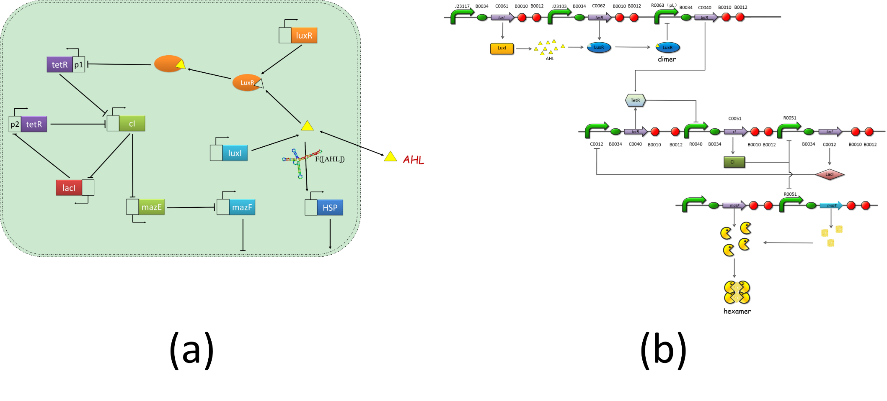
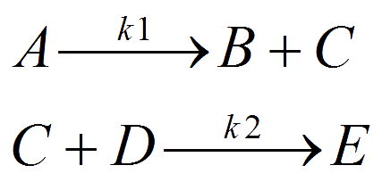
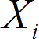
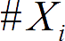
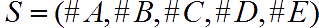
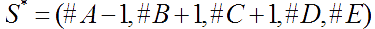

Precise and accurate quantitative measurements of biological systems are crucial to improving understanding of biology. Such measurements often help to elucidate how biological systems work and provide the basis for model construction and validation. Differences between predicted and measured system behavior can identify gaps in understanding and explain why synthetic systems don't always behave as intended.
Mathematics in biology aims at the mathematical representation, treatment and modeling of biological processes, using a variety of applied mathematical techniques. It has both theoretical and practical applications in biological research. Usually, a biological system is converted into a system of equations or rules. The model often makes assumptions about the system. The equations may also make assumptions about the nature of what may occur. The solution of the equations or rules, by either analytical or numerical means, describes how the biological system behaves either over time or at equilibrium, which might not be evident to the experimenter.
A gene regulatory network (GRN) is a collection of DNA segments in a cell which interact with each other indirectly (through their RNA and protein expression products) and with other substances in the cell, thereby governing the expression levels of mRNA and proteins.
Some proteins though serve only to activate other genes, and these are the transcription factors that are the main players in regulatory networks or cascades. By binding to the promoter region at the start of other genes they turn them on, initiating the production of another protein, and so on. Some transcription factors are inhibitory.
For one green world, an Intelligent Microbial Heat Regulating Engine (I’M HeRE), as shown in figure 1, was designed to satisfy our needs described in the project. The engine consists of 2 systems namely the heat-resistant system and the quorum-control system as shown in figure 2. When the number of cells increased to a certain extent, the gene regulatory network was started to control the number of live cells.
 Fig.1 the gene regulatory network (GRN) of the intelligent microbial heat regulating heat engine. (a) shows the regulatory relationships of these genes. (b) is the detailed diagram of the GRN of the quorum control system.The GRN is too complicated to conducted biological experiments. Thus dynamic simulation of the GRN by mathematical modelling is particularly important. Before the wet experiments were conducted, mathematical models were built to predict the behavior of our heat regulating engine. Such bottom-up design of synthetic gene circuit will not only speed up the biology research, but provide us a valuable insight into the system as well. We were able to know in a particular state which genes were expressed? What the expression level was? And what’s the influence of the gene product on cell physiological activities? And by further analysis of the dynamic behavior of gene regulatory networks, we were able to provide a guidance on the design of experiments.
Currently, there are a variety of models, such as the directed graph model, Bayesian network model, Boolean network model, ODE models and stochastic differential equations models, have been successfully applied to the analysis, modeling and simulation of gene regulatory networks. ODE model requires some assumptions which generally cannot be confirmed. One assumption of ODE model is the variables can be continuous values which was not proper for some biological process for the biological objects or molecules are essentially discrete. The variables can be continuous values only on condition that there is a sufficiently large number of molecules. Besides, one important assumption of the ODE model was that the process to be described should be deterministic which cannot be confirmed too. The problem could be solved if a stochastic simulation method was adopted.
For a set of chemical reactions described below:
The number of different kinds of molecules  was expressed as  , thus a state of the system could be described as  . The system changes to a new state if the first reaction occurs.